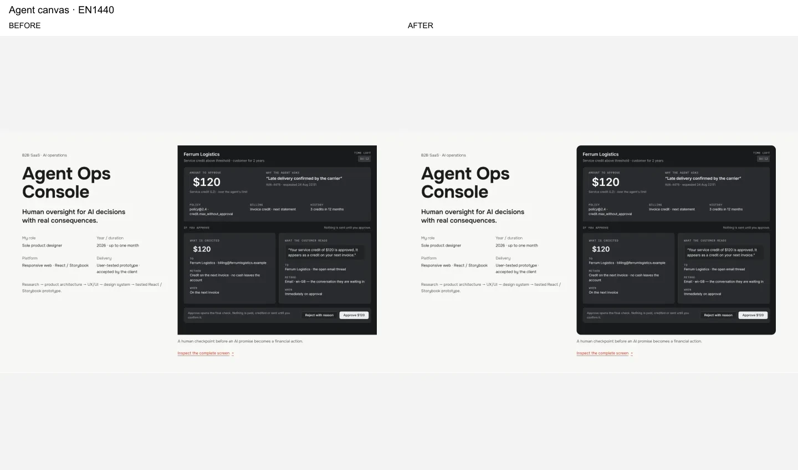
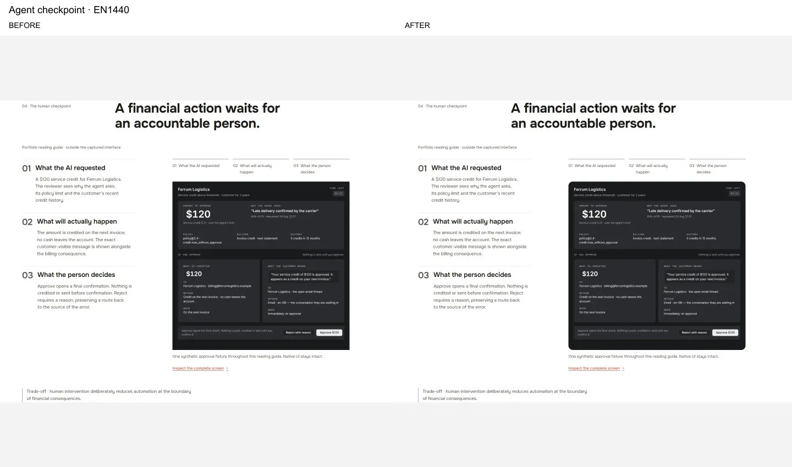
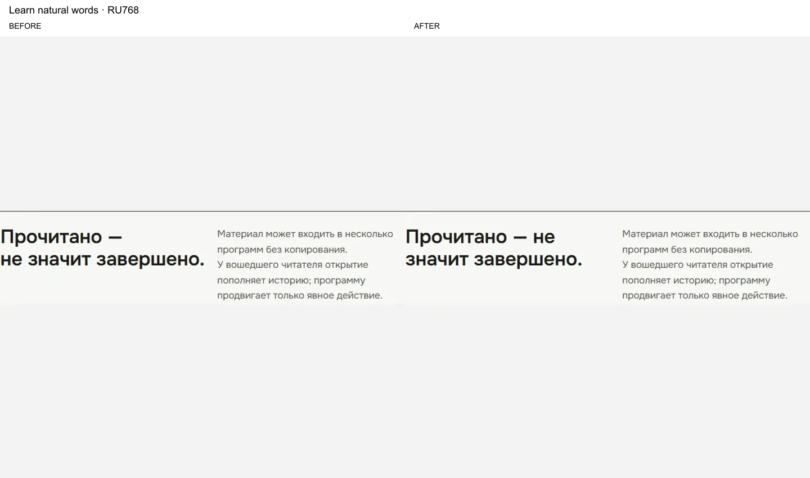
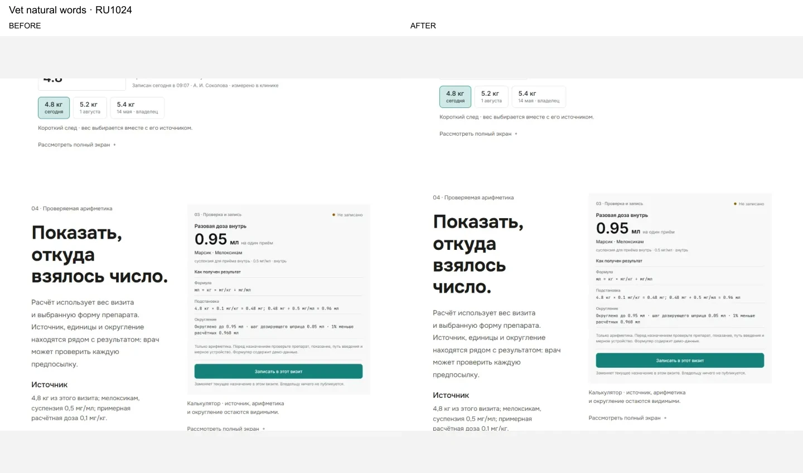
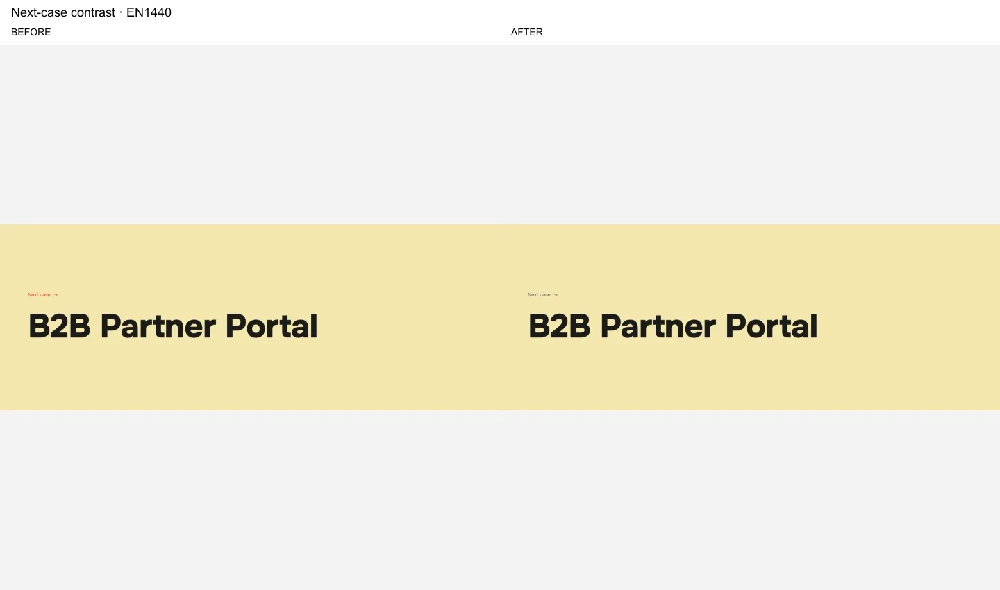
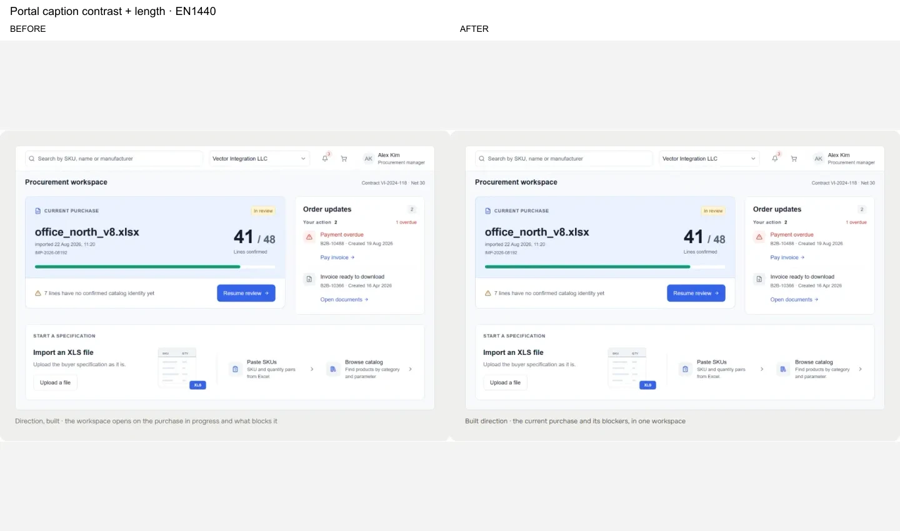
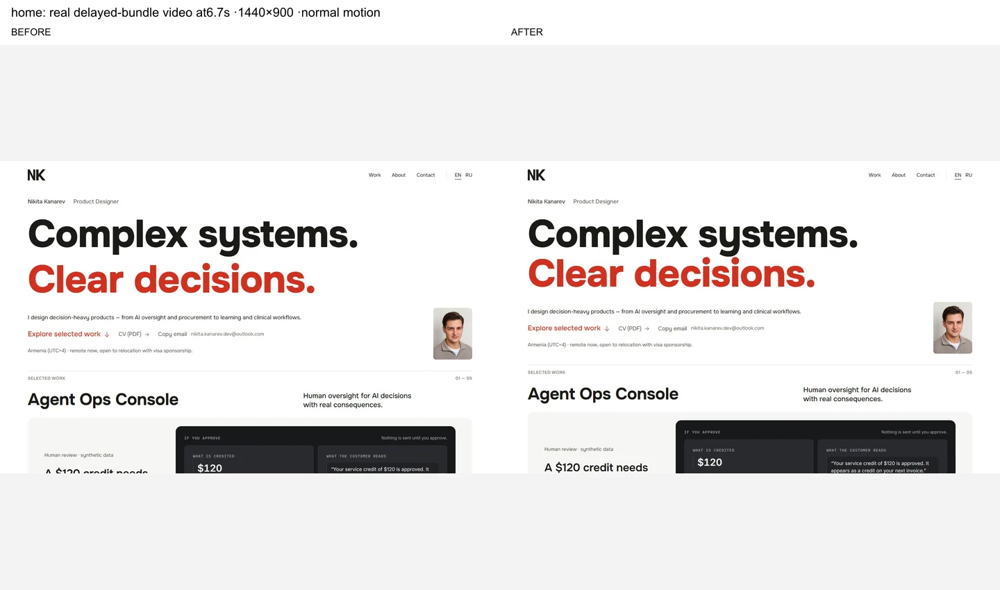
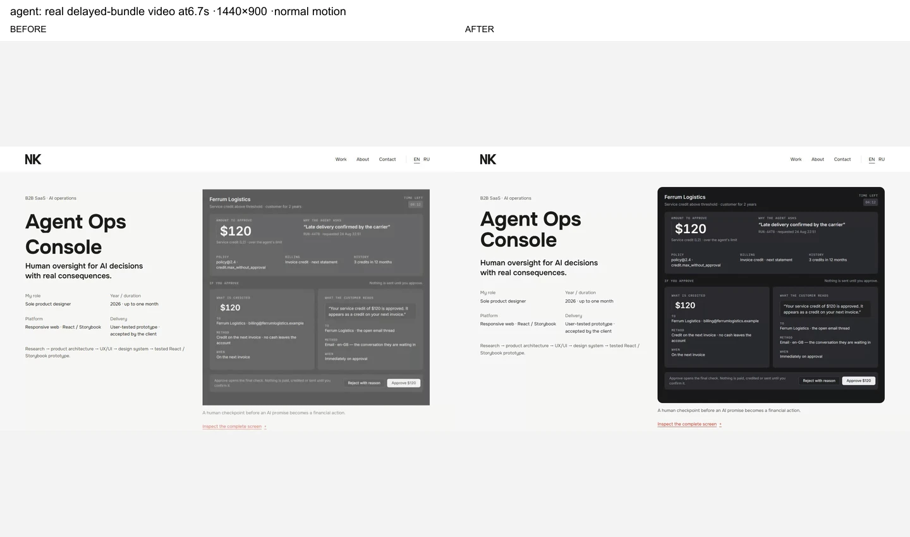
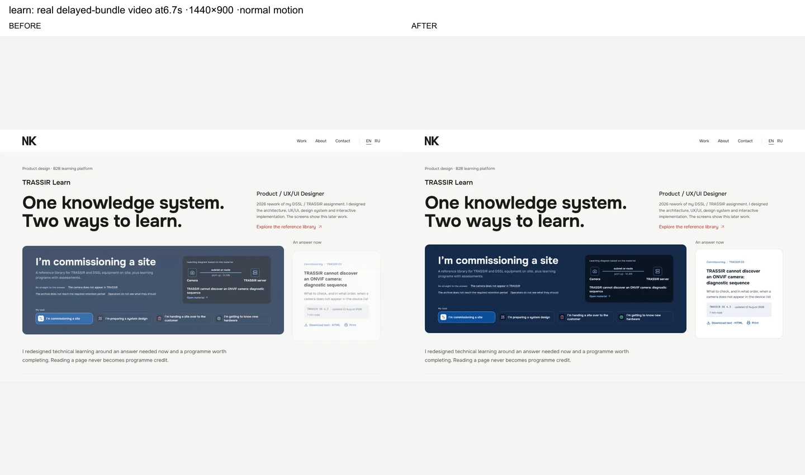

Matched page captures
Reduced motion, same locale/viewport/scroll state. Click an image for its original. Long pages are shown complete, scaled for navigation.
READY FOR INDEPENDENT REVIEW ·3 November2026
Reduced motion, same locale/viewport/scroll state. Click an image for its original. Long pages are shown complete, scaled for navigation.






Same1440×900 viewport, normal motion,3200ms delay on each built JS request.6.7s frames come directly from the videos; sample logs establish the regression window.



Read RESEARCH.md for exact observed behavior and limits. Blinkov's case is password protected; no hidden case interaction is claimed.